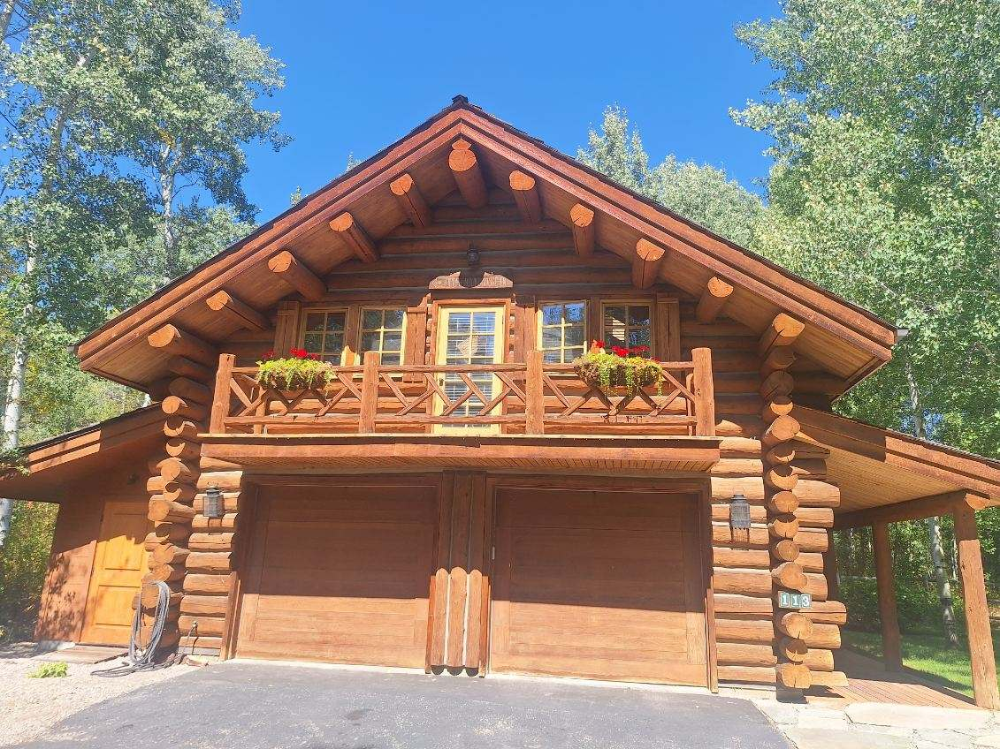

Building in Sun Valley
From Out of State
Most of the homes in this valley belong to people who live somewhere else. We've built our whole way of working around that — clear communication, honest reporting, and a builder you can trust with the keys while you're a thousand miles away.
You shouldn't have to live here
to build here well.
Sun Valley, Ketchum, and Hailey are second-home country. A large share of the projects we take on — new builds, additions, restorations, and chinking and staining — are for owners who live out of state and can't stand on the site every week. That's not a complication for us. It's how we're used to working.
The difference between a remote build that goes well and one that goes badly isn't distance — it's communication. When you can't drop by, you need a builder who shows you the work without being asked, frames decisions clearly, and tells you the truth about schedule and budget every time.
You see everything.
You decide what matters.
Updates that come to you
Photo and video updates from the site on a regular rhythm, not just when something goes wrong. You watch your project progress from your phone — foundations, log work, framing, finishes — with context on what you're looking at.
Decisions framed for a distance
When something needs your input, you get the options, the cost of each, and our honest recommendation in one message — so a choice that would take five minutes at the site takes five minutes from wherever you are.
One person who answers the phone
You're not routed through an office. You have a direct line to the person running your project, and when you call with a question, you get an answer from someone who was on your site that week.
Your whole team, coordinated
Architect in San Francisco, designer in New York, house in Ketchum — we've run that project. We act as the on-the-ground eyes for the entire team, verifying site conditions and flagging conflicts before they cost money.

What out-of-state owners
actually need on the ground.
Owners searching for an owner's representative in Sun Valley are usually looking for one thing: someone trustworthy on the ground while they're not here — watching the work, watching the money, and reporting honestly. We're a builder, not a standalone owner's rep firm. But that oversight is exactly how we run our projects as the contractor: transparent costs, straight schedule reporting, and no surprises you find out about on your next visit.
If you already have a rep, we work alongside them gladly. If you're hiring one because you don't trust your builder — talk to us first.
- New builds, additions, and remodels managed end-to-end for remote owners
- Log home maintenance and inspections while you're away
- Transparent budgets and honest schedule reporting
- Coordination with out-of-town architects, designers, and engineers
- Sun Valley, Ketchum, Hailey, and Bellevue, Idaho
Building from a distance,
answered.
Do I need to be in Idaho while my project is underway?
No. Many of our clients live out of state and visit the site only a handful of times — or not at all — during a project. We structure the communication so you can see the work, weigh in on decisions, and stay on top of budget from wherever you live.
How will I know what's happening on site?
You get regular photo and video updates from the site, a consistent schedule report, and one point of contact who answers the phone. When a decision needs your input, we frame it clearly — options, costs, and our recommendation — so you can decide from a distance without guessing.
Can you work with my architect or designer remotely?
Yes. We regularly coordinate with architects, designers, and engineers who are not local, and we serve as the on-the-ground set of eyes for the whole team — verifying conditions, flagging conflicts early, and keeping the drawings and the site in agreement.
Do you offer owner's representation in Sun Valley?
We're a builder, not a standalone owner's rep firm. But the reason many owners hire a representative — someone trustworthy on the ground, transparent costs, and honest reporting while they're out of state — is how we run every project as the contractor. If that's what you're looking for, talk to us before hiring a separate rep.
Can you look after my log home while I'm away?
Yes. We handle maintenance for out-of-state owners — chinking and stain inspections, repairs, and restoration — and report the condition of the home with photos so you know exactly what it needs and what it doesn't.
Your project in Sun Valley,
in good hands.
Tell us where you are, where the property is, and what you're planning. We'll show you how we'd run it.
Start the Conversation